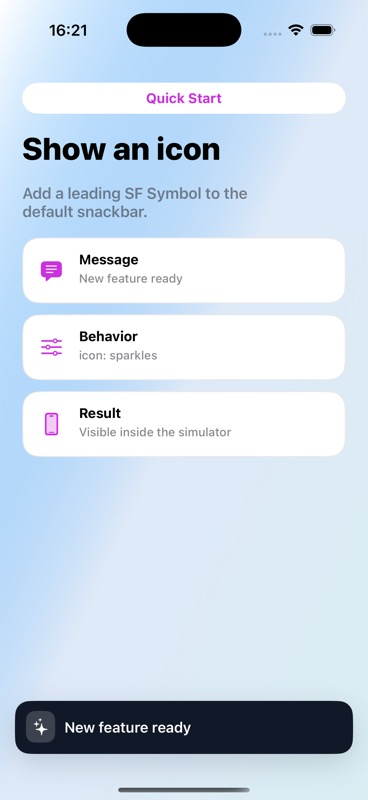

Quick Start
Show an icon
Add a leading SF Symbol to the default snackbar.
Code
let snackbar = TTGSnackbar( message: "New feature ready", duration: .middle ) snackbar.icon = UIImage( systemName: "sparkles" ) snackbar.show()
